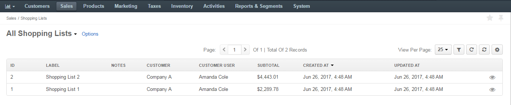
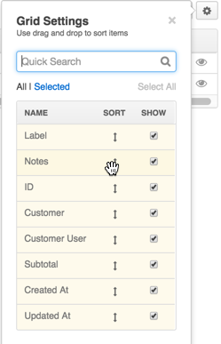
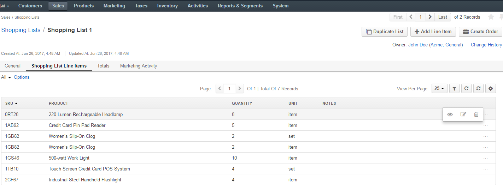
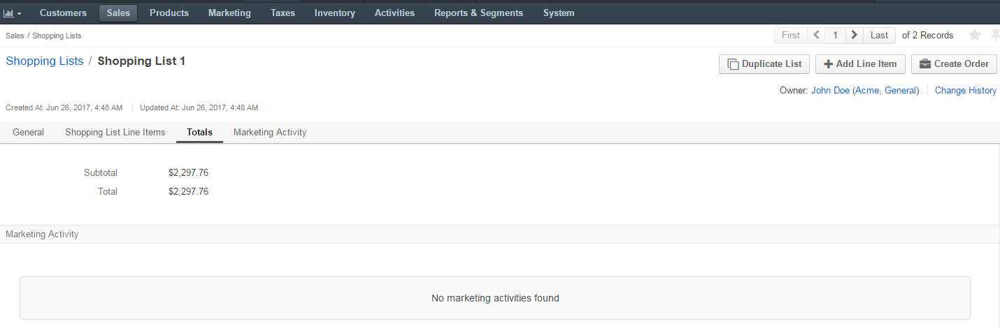
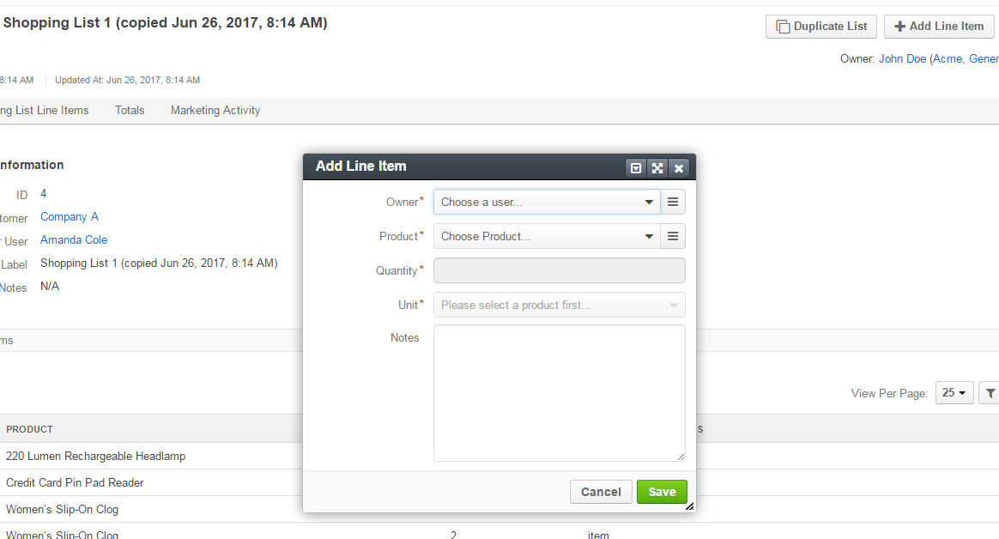
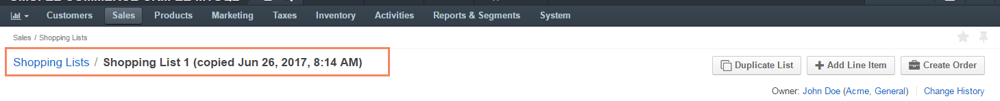

In the management console, to view all shopping lists created in the front store, navigate to Sales > Shopping Lists in the main menu.
Here, you can perform the following actions:
Filter: Click to show filters per column. You can limit displayed items to those that match filtering criteria provided.
Sort: To sort the items by the values in a particular column (e.g. ID, Label, etc.), click the respective column header. When sorting is ascending, an upward arrow appears next to the column name. When sorting is descending, a downward arrow appears.
Refresh: Click to reload the information about the items. If another user recently updated the item details, these changes are reflected upon the refresh.
Reset: Click to roll back the view per page, filters and columns configuration to the default values.
Manage columns: Open the Grid Settings by clicking to see the list of columns that organize the item details. To reorder the columns, click and hold the column name, then drag it to the new location. Toggle on and off the column show option using the Show check box.
View per page: In the list, select the number of items to be displayed per page. Available options are 10, 25, 50, and 100.
Note
To handle significant volume of data, use page switcher, increase View Per Page or use filters to narrow down the list to the information you need.
To view a specific shopping list in the management console:
Navigate to Sales > Shopping Lists in the main menu.
Find the required shopping list and click on it. Use actions described in the View Shopping List Summary if necessary.
After you click on the shopping list, shopping list details page opens.
In the General section, you can find the following information:
In the Shopping List Line Items section, you can review the details of line items added to the shopping list (products, quantity, unit) and notes to the line items, if any.
You can perform the following actions to the items:
To simplify managing the line items, use actions described in the View Shopping List Summary.
The Totals section displays the aggregated amounts, like subtotal, tax, discount, and the total amount that is due for payment of the items in the shopping list. OroCommerce automatically recalculates these amounts when new items are edited in, added to or removed from the shopping list.
The Marketing Activity section shows any activity of this kind associated with the shopping list.
From the Shopping List view page, you can perform the following actions for the shopping list:
To add a line item to the shopping list:
Navigate to Sales > Shopping Lists in the main menu.
Find the required shopping list and click on it. Use actions described in the View Shopping List Summary if necessary.
After you click on the shopping list, shopping list details page opens.
Click Add Line Item.
A pop-up will open, prompting to add details of the new item:

- Owner: Choose a user as the product owner.
- Product: Choose the product from the list, or click and select the item from the list of all products.
- Quantity: Enter the quantity of product units to be purchased.
- Unit: Select whether the product quantity is specified for items, sets, or kilograms. More units may be available depending on your system customization.
- Notes: Enter additional information for the product, if necessary.
To delete a line item from the shopping list:
Navigate to Sales > Shopping Lists in the main menu.
Find the required shopping list and click on it. Use actions described in the View Shopping List Summary if necessary.
After you click on the shopping list, shopping list details page opens.
Navigate to the Shopping List Line Items section, and click at the end of the line next to the necessary line item.
Make a copy of the current shopping list to create multiple similar orders. Do the following:
Navigate to Sales > Shopping Lists in the main menu.
Find the required shopping list and click on it. Use actions described in the View Shopping List Summary if necessary.
After you click on the shopping list, shopping list details page opens.
Click the Duplicate List button.
The copy of the shopping list is created. You can now modify it or convert it into order. The name of the copied list will include the time and date of duplicating the list.

On the Shopping List view page, click Create Order.
See Create an order from the shopping list for detailed guidance.